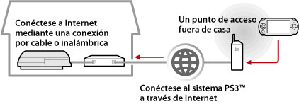
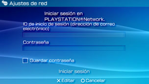

Red > Utilización de la función de uso a distancia (a través de Internet)
Utilización de la función de uso a distancia (a través de Internet)
Para utilizar esta función, es posible que se le solicite la actualización del software de los sistemas PS3™ y PSP™.
Mediante el sistema PSP™ y un punto de acceso inalámbrico (como, por ejemplo, el que se encuentra en un servicio de punto de acceso inalámbrico disponible en el mercado (LAN inalámbrica)), es posible conectarse al sistema PS3™ ubicado en su casa a través de Internet. Para utilizar el uso a distancia desde fuera de su domicilio, el sistema PS3™ debe ajustarse en modo de espera de conexión del uso a distancia.

Nota
El método de utilización de un servicio de punto de acceso inalámbrico (LAN inalámbrica) disponible en el mercado y las tarifas correspondientes a dichos usos varían en función del proveedor de servicios. Para obtener más información, póngase en contacto con el proveedor de servicios.
Preparación (1) (sistemas PS3™ y PSP™)
Para utilizar el uso a distancia por primera vez, es necesario registrar (emparejar) el sistema PSP™ con el sistema PS3™. Registre el sistema en  (Ajustes) >
(Ajustes) >  (Ajustes de uso a distancia) > [Registrar dispositivo].
(Ajustes de uso a distancia) > [Registrar dispositivo].
Preparación (2) (sistema PS3™)
Ajuste del sistema PS3™ para que entre en el modo de espera. Deberá ajustar [Inicio a distancia] en [Sí] para poder encender el sistema PS3™ desde el sistema PSP™.
1. |
Realice los pasos siguientes en el sistema PS3™:
|
|---|---|
2. |
Apague el sistema PS3™. |
 (Usuarios).
(Usuarios). (Apagar sistema) para apagar el sistema y ajustarlo en modo de espera. Verifique que el indicador de encendido esté iluminado en rojo intenso.
(Apagar sistema) para apagar el sistema y ajustarlo en modo de espera. Verifique que el indicador de encendido esté iluminado en rojo intenso.Nota
Para obtener más información acerca de los ajustes descritos en el paso 1, consulte (Ajustes) > (Ajustes de uso a distancia) > [Inicio a distancia] en esta guía.
Preparación (3) (sistema PSP™)
Cree una conexión de red para conectar el sistema PSP™ a un punto de acceso. Para utilizar el uso a distancia a través de Internet, es posible utilizar un punto de acceso como, por ejemplo, un servicio de punto de acceso inalámbrico (LAN inalámbrica) disponible en el mercado. Para obtener más información, consulte la guía del usuario para el sistema PSP™.
Utilización del uso a distancia
1. |
En el sistema PSP™, seleccione |
|---|---|
2. |
Seleccione [Conectarse a través de Internet]. |
3. |
En la lista de conexiones, seleccione la conexión al punto de acceso que vaya a utilizar para el uso a distancia. |
4. |
Introduzca el ID de inicio de sesión y la contraseña de PlayStation®Network para la cuenta en uso.  Si la conexión se realiza correctamente, aparecerá la pantalla del sistema PS3™ en el sistema PSP™. |
 (Red) >
(Red) >  (Uso a distancia).
(Uso a distancia).Salir del uso a distancia
Pulse el botón PS (botón HOME (menú principal)) en el sistema PSP™ y, a continuación, seleccione [Salir del uso a distancia] > [Salir y apagar el sistema PS3™].
Nota
Seleccione [Salir sin apagar el sistema PS3™] si está utilizando el sistema PS3™ para copiar archivos, o para realizar descargas en segundo plano y otras tareas que requieren que el sistema esté encendido.
Uso a distancia a través de Internet
Es posible que no pueda utilizar el uso a distancia a través de Internet en función del dispositivo de red que utilice. En tal caso, compruebe la siguiente información.
- Utilice [Prueba de conexión a Internet] en
 (Ajustes de red) de (Ajustes) para comprobar si el sistema PSP™ puede conectarse a Internet y a PlayStation®Network.
(Ajustes de red) de (Ajustes) para comprobar si el sistema PSP™ puede conectarse a Internet y a PlayStation®Network. - Si el router utilizado es compatible con UPnP, active la función UPnP de éste.
- Si el router utilizado no admite la función UPnP, es necesario ajustar la función de reenvío de puertos del router para permitir la comunicación al sistema PS3™ desde Internet. El número de puerto utilizado por el uso a distancia es TCP:9293. Para obtener más información acerca del ajuste de esta opción, consulte las instrucciones suministradas con el router.
- El reenvío de puertos es una función que sirve para reenviar señales que llegan a un puerto específico (entrada) a otro puerto específico (salida). A este proceso también se le conoce como "asignación de puertos" o "conversión de dirección".
- Si el sistema PS3™ está conectado a Internet a través de dos o más routers, es posible que no pueda establecerse la comunicación.
Notas
- Un router es un dispositivo que permite que varios dispositivos compartan una misma línea de conexión a Internet.
- Es posible que la comunicación esté restringida dependiendo de las funciones de seguridad de que disponga el router y ofrezca el proveedor de servicios de Internet. Consulte las instrucciones suministradas con el dispositivo de red y la información de su proveedor de servicios de Internet.